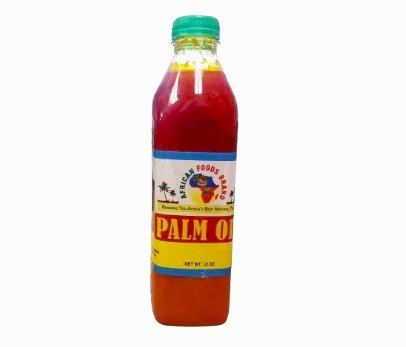
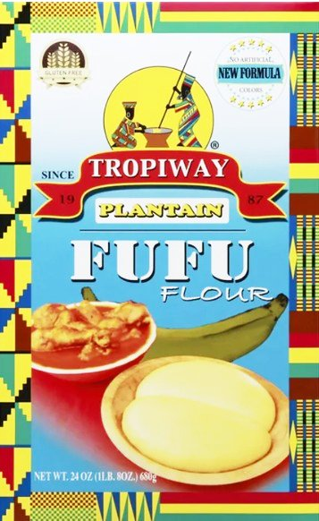

Choose Narrow Way LLC

Explore our most popular African products — trusted, authentic, and full of tradition.

A staple in West African cooking, perfect for stews and soups.

Essential for classic dishes like egusi, palmnut soup, groundnut soup, light soup and okra soup.

Perfect for African soups, stews, grills & Fried dishes.

A staple in many African and variety of cultural dishes, perfect for salads, stews, and salsas.
Discover the most trusted African food products loved by communities across Irvington, Newark, East Orange, Maplewood, and Union. Our market highlights customer‑favorite items from West, East, Central, and Southern Africa — all curated to help you find the authentic ingredients you love.
Choose Narrow Way LLC is committed to bringing authentic African & Caribbean groceries and cultural essentials to our New Jersey community. We showcase the most popular and beloved products from Nigeria, Ghana, Cameroon, Kenya, Senegal, Ivory Coast, Liberia, Haiti, Jamaica, Trinidad and Tobago, Guyana, and more.
From palm oil and fufu flour to suya spice, banku mix, fresh fish, fresh meat, vegetables, and fruits. We highlight the top‑selling African groceries customers search for most. Proudly serving Irvington, Newark, East Orange, and surrounding NJ areas.